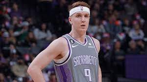

The Sacramento Kings made it clear that they are tired of watching the playoffs from their couch. They want to snap their 16-year playoff drought with new head coach Mike Brown and a roster they revamped in the 2022 NBA Offseason.
Sacramento made some solid moves this offseason to bolster the team around De’Aaron Fox and Domantas Sabonis. They remained a fairly young team with more depth. Since they weren’t able to pull off any massive trades, they have taken some steps towards progress rather than trying to make a leap for it.
Don’t expect the Kings to snap their playoff drought just yet. What you can expect is a more talented team that takes a step towards making the postseason. Here are the Kings’ 2022 offseason grades.
The Draft
There were tons of rumors suggesting what direction the Kings might take on draft night. After tons of hypothetical trades and guessing which prospect was the apple of their eye, they stayed put with the fourth overall pick and drafted Iowa star Keegan Murray.
Murray dominated college basketball last season. He scored at will from numerous places on the floor and provided some solid defense, too. Right away, he proved that he is ready for the NBA by dominating the Las Vegas Summer League. Although he will likely be more of an off-ball threat in the regular season, he showcased some crafty moves, solid ball handling and an all-around great feel for the game.
The concern with Murray is that he may be already close to what his potential is. He turns 22 years old next month and is not a freak athlete. As someone who may not be a 3-point marksman or outstanding playmaker, he may have a tougher time making defenses pay at the next level. Even if he doesn’t improve in those areas, his smarts and large frame should make him a decent player at the NBA level quickly.
There are plenty of players drafted after Murray that could be better than him, as is Kings tradition. However, if Murray can buck the trend of some recent Sacramento draftees and become a truly good player (which he absolutely can do), it won’t matter.
Trades
The Kings acquired Kevin Huerter from the Atlanta Hawks for Mo Harkless, Justin Holiday and a protected 2024 first-round pick.
Atlanta decided to make some more room in their rotation and the Kings now have a very solid bench piece because of it. Huerter averaged 12.1 points, 3.4 rebounds and 2.7 assists per game last season while shooting a career-high 45.4 percent from the field and 38.9 percent from deep. The shooting and scoring that Huerter brings will be very key for Sacramento. He fits very well next to Fox or as a sparkplug off the bench.
Even if the Kings don’t improve much with Huerter, the draft pick they give up won’t be in the top 10. The two players they traded have much less upside than Huerter and were likely to end up being end-of-rotation guys anyway. Huerter is a very solid sixth man that is only 23 years old and under contract for four more years. This trade was a very good one.
Free Agency
The Kings made two additions in free agency while losing two players.
Aside from doing something really cool by reuniting the 2016-17 Kentucky backcourt, the Kings added some nice scoring pop by bringing in Malik Monk. The 24-year-old has become a strong perimeter shooter, converting on over 39 percent of his triples in each of the last two seasons.
Also, Sacramento let Donte DiVincenzo walk. He signed with the Golden State Warriors after the Kings acquired him in a mid-season trade, Although not bringing him back was a mistake, his offensive production can easily be replicated by Huerter or Monk.
The Kings also signed KZ Okpala and saw Damian Jones sign with the Los Angeles Lakers. Although they only made one signing that should make a big addition, they did a solid job by locking up young players that should be helpful going forward.
Overall
With the moves the Kings made this offseason, they are not a playoff contender. They may not even make the play-in tournament in a highly competitive Western Conference. But they made improvements with young players, hence their good grade.
Sacramento could roll out a lineup of Fox, Monk, Harrison Barnes, Murray and Sabonis with a bench of Huerter, Davion Mitchell and Richaun Holmes, though he is currently facing allegations of domestic violence. That team isn’t going very far but it is a better squad than last year’s Kings.
There was no clear way for the Kings to instantly become a playoff team this season. However, there were plenty of ways to still make the team better. They found them, and they had a very solid offseason because of it.